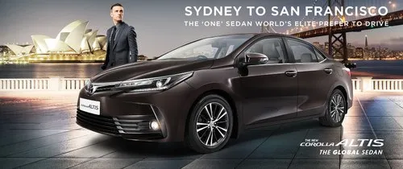
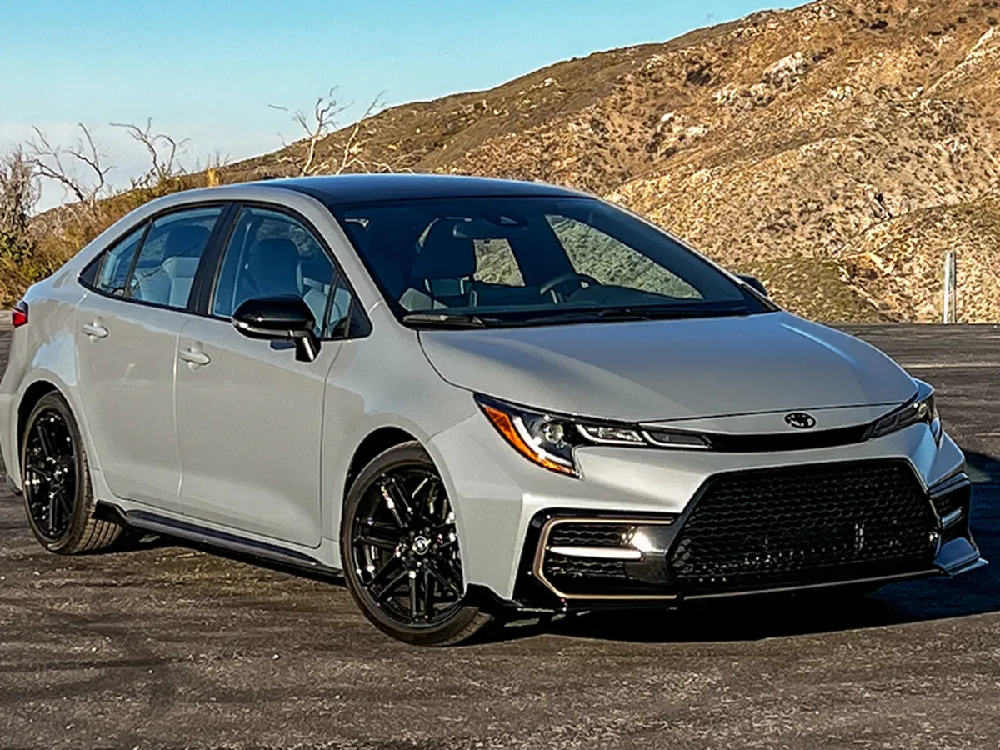
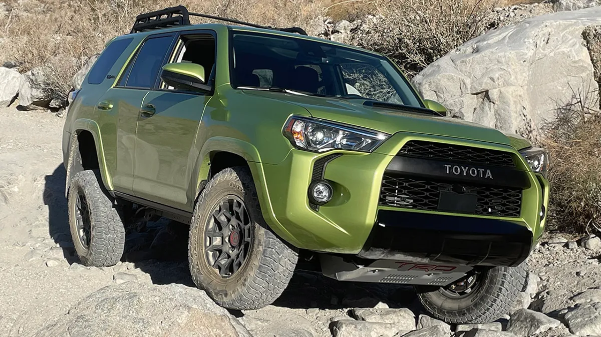
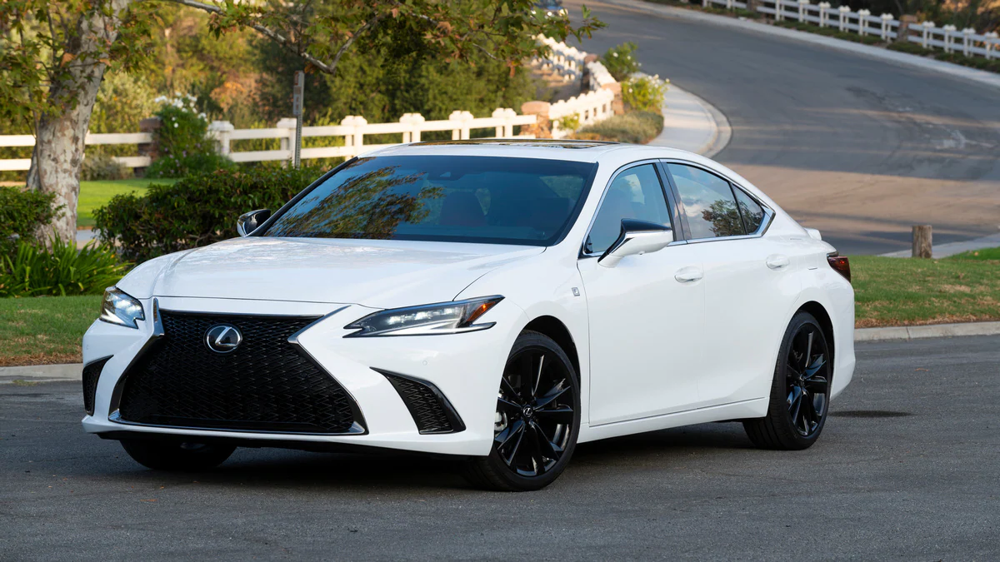

The 'iconic' Toyota Supra


The Toyota Supra is a sports car and grand tourer manufactured by the Toyota Motor Corporation beginning in 1978. The legendary Mk4 Supra (on the left) was propelled to fame by the immortal 2JZ engine. It had great tuning potential. It sold for $39,000 back in the day, but today, enthusiasts will pay upto $100,000 for it. Discontinued in 2002, The Supra name tag was re-introduced in 2020 with partnership with BMW and known as the A90 Supra (on the right). The car comes in a performance guise, and so is known as the GR Supra.
Toyota Corolla
 The Toyota Corolla is a compact car manufactured and marketed globally by the Japanese automaker Toyota Motor Corporation. Introduced in 1966, the Corolla was the best-selling car worldwide by 1974 and has been one of the best-selling cars in the world since then (from San Francisco to Sydney). The 12th-generation Toyota Corolla (shown on the right) offers impressive fuel efficiency and an abundance of standard safety features in a compact package that looks far more exciting than it is to drive.
Toyota 4Runner
The Toyota 4Runner is an SUV manufactured by the Japanese automaker Toyota and marketed globally since 1984, across five generations. It gets a Reliability score of 8.8 out of 10 as the most-reliable mid-size SUV. Toyota 4runners are known for being simple, capable off-road, and their reliability is nearly unrivaled. They offer an adventurous image for their owner and hold their value very well. The legendary Toyota truck family’s reputation carries over to the 4runner and it’s certainly deserved. Toyota 4Runner is available in TRD Pro version which makes it more off-road specific.
Lexus ES
Lexus ES is on the list, as it's based on the Toyota Camry, which is also the top selling model in the market. Lexus has positioned the ES in the comfort luxury segment, with an emphasis on interior amenities, quietness, and ride quality, in contrast with more firm-riding sport sedans.